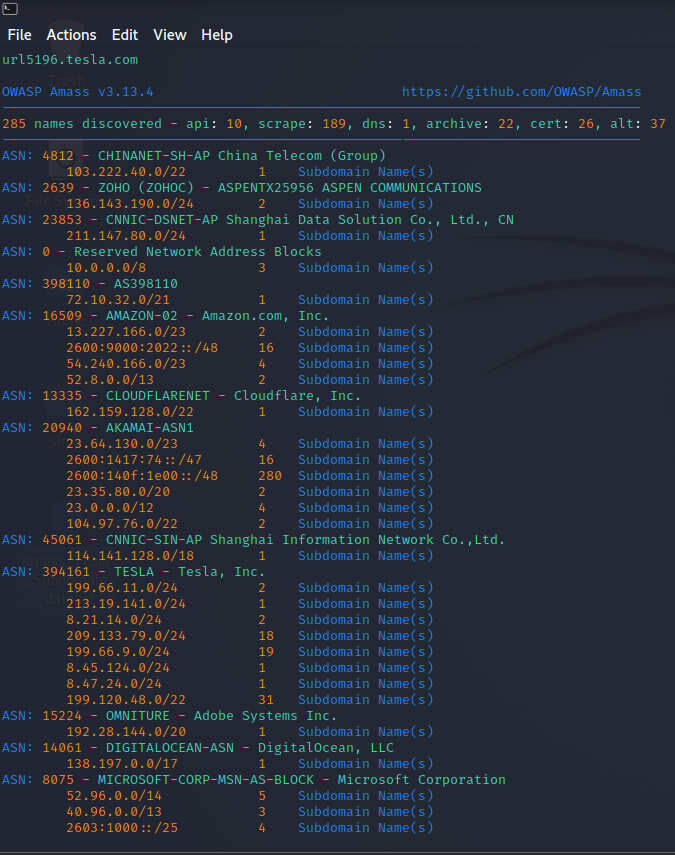

There is
- dev.tesla.com
- www-dev.tesla.com
- www-stg2.tesla.com
- www-test.tesla.com
this all look juicy
- sso-dev.tesla.com
- qa.tesla.com
We want to know where there mails are like
- webmail.tesla.com
- xmail.tesla.com
Sublist3r was a great tool of it's time but now this tool is popular and one of the go to tools
(i.e. owasp amass)
Now using this tool we have to find that it shows more sublist than sublist3r or not ?
So we will install this tools using this code :
apt-get update
apt-get install amass
The most basic use of the tool for subdomain enumeration:
amass enum -d tesla.com
or
amass intel -d tesla.com -whois
As we know that sublist3r found subdomains around 324 and amass was able to find around 285 in 20-25 minutes.

So i think sublist3r gives results more quickly than amass.
And will save the sublist3r domains output to a txt file and will pass it to httprobe to check which links are alive and not are not.
So it will simply tells which website works on http or https.
cat domains.txt | httprobe >> working_domains.txt
https://www.youtube.com/watch?v=nQs5Bw7ErcU